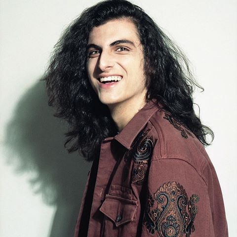

Greta Van Fleet Origins
Greta Van Fleet was formed in 2012 in the small town of Frankenmuth, Michigan, by brothers Josh, Jake, and Sam Kiszka. Growing up in a family which ws already well-versed in music, the brothers discovered their taste in music by always digging through their parents’ extensive vinyl collection, immersing themselves in classics from all genres including blues, R&B, and most of all, rock and roll. Their band name was inspired by a local elderly woman by the name of Gretna Van Fleet, whom the original drummer's grandfather was cutting wood for. With her blessing the band agreed to use her name but drop the 'n' so it would flow better before they started performing at local gigs in garages and small halls. Around 2013 a friend of the family, Danny Wagner, took over as the band's new drummer, solidifying the group that would rapidly ascend from high school performances to international, Grammy-winning stadium rock stardom.
Band Members
Josh Kiszka

As the energetic frontman, Josh is renowned for his soaring, powerful vocal range that frequently draws comparisons to classic rock legends. His theatrical stage presence and bohemian fashion choices serve as the visual centerpiece for the band's live performances.
Jake Kiszka
Josh’s twin brother, Jake, is the band's driving musical force, channeling vintage riffs through blistering, blues-infused guitar solos. He heavily influences the group's sonic direction, favoring analog gear to capture an authentic, old-school rock sound.
Sam Kiszka
The youngest Kiszka brother, Sam, provides the band's rich melodic foundation by seamlessly switching between groovy basslines and sweeping Hammond organ melodies. His multi-instrumental talents add a distinct texture and depth to their studio tracks and live arrangements.
Daniel Wagner

Joining the lineup in 2013, Danny locks down the band's rhythm section with his dynamic, heavy-hitting drumming style. Also a skilled acoustic guitarist, his precise timing and explosive fills bring immense power and cohesion to the group's music.